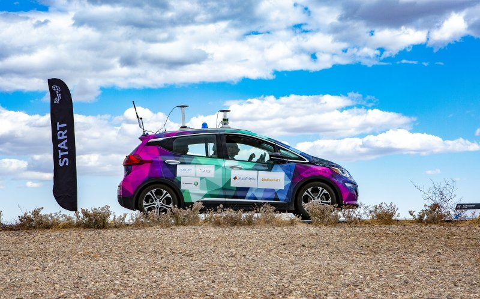
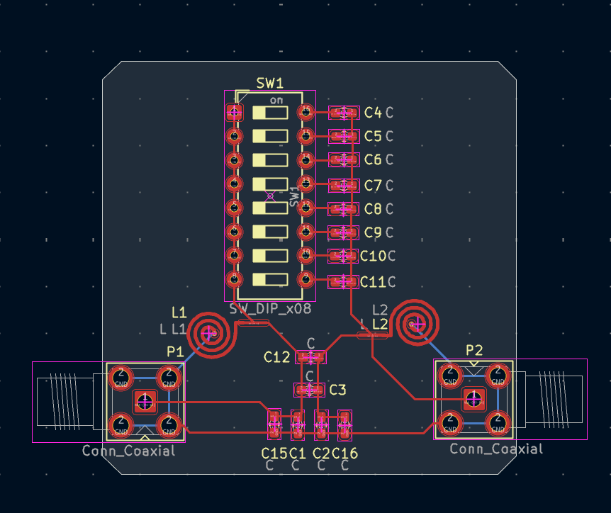
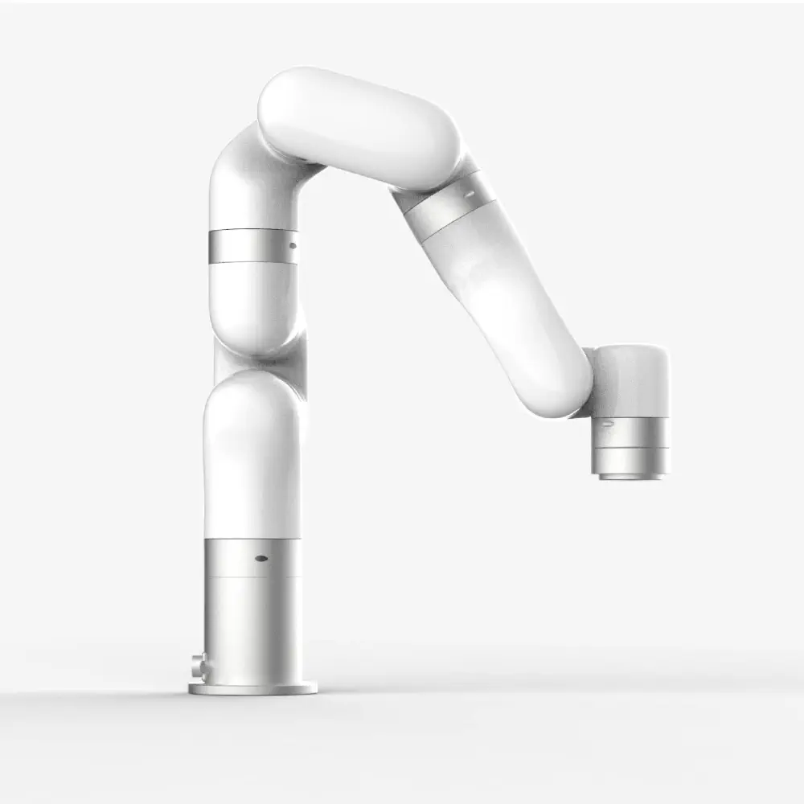
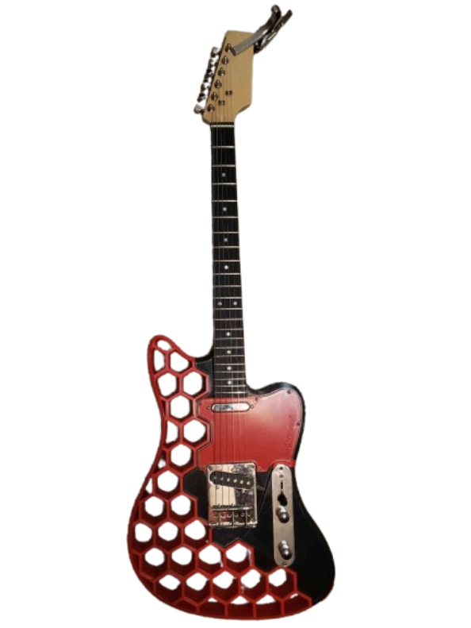

A 5 year competition to create a level 4 autonomous vehicle. Worked on Perception, focusing on localization through the use of a custom SLAM algorithm.
Used Pole-like structures identified and associated using LiDAR perception as reference points to determine vehicle's position in the world. Developed using ROS, Python, and C++.

Undergraduate research working on designing optical and electrical systems that exhibit non-hermitian properties. Additionally worked on other quantum and integrated photonics projects such as examinations of micro-ring resonators

A new project started upon the conclude of AutoDrive II. Conducted as part of the Robotic Systems Enterprise at Michigan Tech University to simulate, path-plan,
and control a 7 Degree of Freedom Ufactory x-arm using ROS 2, Gazebo, Moveit, and Computer Vision through a mounted camera. Will be controlled in tandem with
a second, smaller, Niryo 6 Degree of Freedom robotic arm, to perform congruent tasks with both arms.

A 3d-printed, fully functional electric guitar. Manufactured using an Ender 3 v2 FDM printer. One of, if not, my first major project which will always hold a special place in my heart